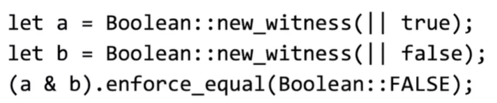

zkSNARK基础课程学习
课程链接：https://rdi.berkeley.edu/zk-learning/
2.Overview of Modern SNARK Constructions
简短：证明短<1KB，验证快 <10ms
区块链检验，一个监控很多个
C2PA：相机里有无法提取的私钥用于签名，保证照片的正确性
构建
算数电路->有向无环图
|C|门的数量，C_SHA256≈20K
NARK证明
SNARK简短
zkSNARK零知识
完备性：知道witness一定可以接受
知识可靠性：接受了，一定知道witness
len(pi)=O(log|C|),time(V)=O(|x|,log|C|)（预处理阶段提取处理电路大小）
四种方案对比
健全性的定义
四种承诺
多项式承诺
一些具体算法
对多项式的承诺，一般认为是 对向量的承诺（时间取决于度数）
证明两个多项式相同，随机选择相同的自变量，如果函数的输出结果相同，则两个多项式极高概率完全相同
FS变换把交互式的改为非交互式的，但是并不是在每一个协议上都安全，又但是在zkSNARK上运行的刚刚好
变更为，将随机数改为公开参数的哈希值
（这个不是zkSNARK，但是是SNARK）
IOP：将一个度数为d的多项式转化为普遍电路

IOP把问题转化为多轮交互，需要验证的是验证结果是否正确
一个简单的例子
很像KGZ协议哇，对多项式进行承诺，但是关注点在于多项式是否包含
最终一个小总结，不同的证明对应不同的协议，但是都叫IOP
真正开发的时候不编写电路，而是选择特定的语言，编译成相应的电路，最终都放在SNARK里面
3.Programming ZKPs
关注于如何编写ZKP代码
R1CS（略
硬件和软件的区别
<— 赋值；===建立恒等关系；<== both
Circom语言
确保输入为非零
Libraries
使用rust伪代码实现
为了简化，使用运算重载
高级调用

Artwork
rust
编译成R1CS
Zokrates
更高级的语言
缺点：witness必须提供给主函数
小结
circom过于底层，能力不多
artwork没有很多优化
zokrates易于学习但是控制权较低
有各种各样的~
在近几年涌现
4.Interactive Proofs
交互式证明
完备性：诚实则可以接受
安全性：不诚实则被拒绝
为什么要非交互：和区块链结合
FS变换：公共硬币协议
交互式不必知识健全
三种多项式承诺
默克尔树->证明叶子节点T->向量承诺方案
多项式承诺可以考虑等价为默克尔承诺，但是效率太低了
快速且高效的
FACT: Pr<d/|F|
SZDL: 多变量多项式
多重线性拓展
进行拓展
只有每一项都符合的项，有相应的数值

如何高效计算多线性拓展算法，利用拉格朗日插值法
想知道一个函数所有二进制输入上的值，只需要2^t时间内进行拉格朗日插值计算出点
使用动态规划减少时间复杂度

sum check协议
目标：计算这个数
但是代价很大，如何高效的计算这个数
先检验几个点，就有极高的概率确定是正确的多项式
朴素求和，时间复杂度2^e
优化，计算e次
健全性
应用
线性时间验证
计算三角形的数量，最小情况下是矩阵乘法
转化为log级别
然后用sum-check协议，就可以快速验证
电路可满足性，zkSNARK推导
转成对数形式

IOP
.gif)
.gif)
.gif)
.gif)
.gif)
.gif)
.gif)
.gif)
.gif)
.gif)